Production candidate · Staging review · November 24, 2026
The new Lucky Domains site, staged for approval
This is the actual production candidate, exported from the branch digital-presence-production-candidate at commit 8bfedd71cd. It is not another design concept. Nothing here is live on LuckyDomains.io, and nothing will be until Ken approves it.
Open the staged siteRead the five articlesDigital Presence Check
Lucky Domains draft pull requestKenAshe.ai draft pull request
The live LuckyDomains.io and KenAshe.ai sites were not changed. Both pull requests are drafts and unmerged. Staging pages are noindex, the contact form is disabled here, and nothing is collected.
Every staged page
Pages
Insights articles
- What AI Search Reads When It Reads Your Website
- When to Fix a Website and When to Rebuild It
- Entity SEO for Founders: One Name, Many Profiles
- How a Private Domain Purchase Actually Works
- Can Domains Become the Identity Layer for AI Agents?
Legacy redirect stubs
How to review
- Start on the home page and use the site as a visitor would.
- Read each article in full. They are the largest new piece of writing.
- Try the site on your own phone, and in Safari.
- The form shows a notice here and sends nothing.
What changed from the approved design
The design is the approved one. These are the differences between the refined concept and this candidate.
- Ported into the production repository as plain HTML, one stylesheet and one script. No build step, no framework.
- Production URLs: the founder page stays at /founder/ken-ashe/ and the domain service lives at /services/domain-acquisition/. Every existing URL is kept.
- Review banners, concept labels and noindex removed from the source. Staging adds its own notice and noindex.
- The real contact form replaces the inert one: Web3Forms, the honeypot, validation, success and error states, and the mailto fallback, exactly as on the live site. Inquiry options now match the five services.
- Insights is a library of five complete articles. The planned-article cards and the Coming labels are gone.
- The services section explains three related services (SEO, Entity SEO, AI Visibility), not two.
- Each service page and the process page end with a Related reading list.
- The News page lists only the real June 2026 release. The sample announcement is removed.
- The sitewide footer no longer links to KenAshe.ai. The repository's rule keeps founder profile links on the founder page; KenAshe.ai is linked where it is the source.
- Full metadata on every page: unique title and description, canonical, Open Graph, and structured data.
One factual correction to the approved concept. It said the Autonomous SEO Agent maintains Lucky Domains profiles. The public build record does not say whose profiles it maintains, so the candidate describes it as an internal system the founder built and quotes the record's own figures (63 sites researched, eight profiles confirmed live, no SEO impact established).
Final content decisions, as applied
- SEO engagements: Growth SEO as a monthly package is removed everywhere. SEO is offered as one-time audits, technical reviews, scoped implementation projects, and search and content strategy, with ongoing optimization and monitoring by agreement. The engagement card is now SEO Audit or Project.
- AI Visibility: the approved explanation is kept. No first-party AI experiment is claimed. Founder commentary appears only on the Founder page, labeled as opinion.
- No portfolio: no Work navigation, case studies, logos, testimonials, or results. The test suite fails if any return.
- Founder: about 20 years working with HTML, CSS, websites, and WordPress, and more recently AI-assisted development. It is not described as professional software engineering. Four published items were selected and each link was opened and checked.
- Location: Berkeley Heights, New Jersey, on Contact, About, News, the footer, and in the Organization data.
- News: historical release untouched. No new announcement written.
- Articles: all five are editorial drafts with no publication date. They are noindex and outside the sitemap until dates are set.
- Digital Presence Check: unchanged from the approved version.
Article inventory
Five complete articles. Every source was opened and read on November 24, 2026. Nothing in them is an invented client, statistic, quotation, or result.
| Article | What it covers | Principal sources | Uncertainties to know about |
|---|---|---|---|
| What AI Search Reads When It Reads Your Website Guide · AI visibility · 1,458 words | Separates search indexing, live retrieval, and model training, lists each company's published crawlers, sets out what Google says its AI features need and do not need, and ends with what an owner controls and does not. | Google Search Central (AI features, the generative AI optimization guide, generative AI controls, Google-Extended, JavaScript SEO, structured data), Bing Webmaster Guidelines and the AI Performance announcement, OpenAI, Anthropic, and Perplexity crawler documentation. | Google added a Search Console setting for generative AI features and updated its controls page on November 24, 2026. The article describes the setting without stating its default. No AI company other than Google documents whether its crawlers run JavaScript; the article says so and labels the one study it cites as secondary and from 2024. |
| When to Fix a Website and When to Rebuild It Guide · Websites · 1,458 words | A decision framework: what is usually repairable, the signs the foundation is the problem, a comparison table, five deciding questions, how to protect search visibility in a rebuild, and what a rebuild will not fix. | Google Search Central (site moves, redirects, page experience, mobile-first indexing, helpful content), web.dev Web Vitals, W3C WCAG 2.2, and this repository's decision log for the first-party example. | Google has no documentation page on redesigns that keep the same URLs, so the article quotes its site-move guidance. The sentence that the late 2026 redesign kept every address becomes true only when this candidate launches. |
| Entity SEO for Founders: One Name, Many Profiles Explainer · Digital identity · 1,543 words | Why a founder's identity fragments, choosing one authoritative page, consistency, Person and Organization structured data, bylines, sharing a name, what Google says about Knowledge Panels, and why independent recognition cannot be self-written. | Google Knowledge Panel Help, Google Search Central (ProfilePage, Organization, Article author markup, structured data guidelines, helpful content), Schema.org, and Google's 2012 Knowledge Graph announcement. | Google publishes no method for telling apart people with the same name; the article says so. The first-party example describes Ken's Person record (one identifier, 19 profile links, four credentials) and claims no Knowledge Panel. |
| How a Private Domain Purchase Actually Works Explainer · Domains · 1,636 words | A general guide, separate from the Lucky Domains process page: what taken means, finding the holder, trademark and history checks, valuation, anonymous outreach, negotiation, escrow, the transfer, common mistakes, and when to walk away. | ICANN (lookup, RDAP, Registration Data Policy, Transfer Policy, domain life cycle, UDRP, registrant responsibilities), WIPO, USPTO, Escrow.com's own documentation, the Internet Archive, and Google's guidance on old domains. | ICANN's Board adopted a revised Transfer Policy in June 2026 that is not yet in force and has no published date. The article states the current 60-day rules and flags the change. At about 1,600 words it is the longest of the five. |
| Can Domains Become the Identity Layer for AI Agents? Research · Agent identity · 1,451 words | The existing research note, expanded and kept exploratory: what a domain already does, what an agent identity would need, the domain-anchored proposals and the blockchain naming proposals, Ken's two experiments and their limits, and what is unresolved. | The two KenAshe.ai build records, the A2A specification, the MCP Registry documentation, the IETF working group and two Internet-Drafts, ENS documentation, ERC-8004, x402, NIST, and the OpenID Foundation. | Almost everything cited is a draft, and several expire in 2027. All six claims about ZeroHuman and the earlier experiment were rechecked against the build records and on-chain on November 24, 2026. The latest dated statement that no outside agent has bought is November 20, 2026. |
How to add, edit and publish an article: docs/INSIGHTS.md in the production repository.
URLs
| URL | Status |
|---|---|
| /, /services/, /services/entity-seo/, /how-we-buy-domains/, /about/, /founder/ken-ashe/, /contact/, /news/, /news/website-relaunch/ | Preserved. Same URL, same file path. |
| /services.html, /about.html, /contact.html, /how-we-buy-domains.html, /news/website-relaunch.html | Preserved, unchanged. Legacy redirect stubs. |
| /services/website-design/, /services/seo/, /services/ai-visibility/, /services/domain-acquisition/ | New service pages. |
| /tools/digital-presence-check/ | New. There is no /tools/ index page until there is a second tool. |
| /insights/ and five article URLs under it | New. |
| /work/, /portfolio/ | Never created. |
The complete map is docs/URL_MAP.md.
SEO migration approach
- No existing URL changes, so no redirects are needed at launch.
- The five legacy .html redirect stubs are byte for byte unchanged and stay crawlable.
- The /services/ page keeps the #websites, #seo, #domains and #selling anchors, because KenAshe.ai posts link to them through the services.html stub.
- Every page has a self-referencing canonical on https://luckydomains.io with a trailing slash, matching its internal links and its sitemap entry.
- The sitemap lists every indexable page. An article joins it when it is published.
- robots.txt is unchanged and blocks no duplicate URL forms.
- Structured data: Organization, WebSite, ProfilePage and the shared Person on the home page; Service, WebPage and BreadcrumbList on each service page; Article and BreadcrumbList on each article. The shared Person node is byte-identical to the live copy.
- Staging URLs appear nowhere in the source. The test suite checks for them.
Test results
- Production test suite (tests/test_site.py): all 3,158 checks pass. It covers URL forms, links, canonicals, the sitemap, metadata, structured data, the shared header and footer, the articles, the Digital Presence Check, the contact form, and the owner decisions.
- The launch mode (tests/test_site.py --launch) fails on purpose, on one check: five articles are still drafts. A rehearsal on a scratch copy, with a made-up date, published all five and passed.
- Accessibility: axe-core (WCAG 2.1 A and AA, plus best practices) reports no issues on any of the 21 pages at 375 and 1440 pixels. Two findings from the first run were fixed: article callouts were announced as nested landmarks, and three links in the June press release were below AA contrast.
- Browsers and widths: Chromium and Firefox at 320, 375, 390, 768, 1024 and 1440 pixels on all 21 pages. No horizontal overflow, console errors, broken images, missing alt text, text under 12 pixels, or touch targets under 24 pixels.
- Layout shift on a fresh load: 0 on every page, desktop and phone.
- Interactions: 134 scripted checks pass in Chromium and Firefox. They cover keyboard order and focus, the menus and Escape, the presence map by click, touch and keyboard, the Pause control, the diagnostic, the five layers, the Digital Presence Check (including that it stores and sends nothing), the Insights library, the article contents list, reduced motion, and no JavaScript.
- Contact form: on staging it is disabled and sends nothing. On the candidate source, the form's own validation, the ?need= prefill, the honeypot, the mailto fallback and the Web3Forms request were verified with the request intercepted, so nothing was sent.
- Legacy URLs: all five .html stubs redirect to their directory URLs on the candidate source, and services.html#seo lands on the SEO card.
- Third parties: a page view on the candidate makes no third-party request.
- Links: every internal link resolves. External links were checked from the review repository's verifier.
Load measurements
Measured on the published staging copy. Figures are added after the first deployment.
Limits
- Safari is not verified. WebKit could not start in the build environment (missing system libraries).
- Lighthouse was not run. Its package cannot be installed in the build environment, and the PageSpeed API returned rate-limit errors. The load measurements above were taken directly in Chromium and are not Lighthouse scores.
- The real contact form delivery, the www redirect, and the 404 page for missing paths exist only on the live domain and are checked after launch.
- The KenAshe.ai pull request could not be built locally. Its Vercel preview build is the check.
Outstanding editorial decisions
- Approve or edit the text of each of the five articles.
- Approve the byline, By Ken Ashe, on all five.
- Give the publication date or dates. Until then the articles stay drafts.
- The private domain purchase article is about 1,600 words, slightly over the 1,500 target. Trim it or leave it.
- Confirm the four items chosen for Published work and media on the Founder page.
- Confirm the engagement name SEO Audit or Project.
- The Digest pipeline on KenAshe.ai still describes Lucky Domains in the old way inside its prompt and links only to the legacy deep links. That is a publishing-system change, so it was left alone and is noted in the KenAshe.ai pull request.
Launch blockers
- Owner approval of the staging site.
- Owner approval of the five articles, the byline, and the publication dates.
- A person checks Safari on a Mac and on an iPhone. WebKit could not run in the build environment.
- One real contact form submission from a browser on the live domain, after launch. It cannot be tested on staging or with a script.
- The legacy stubs, the www redirect and the 404 page can only be confirmed on the live domain, after launch.
Production deployment and rollback
Prepared, not executed. The full procedures are in docs/RUNBOOK.md, sections 9 and 10.
- Owner approves staging, the articles, the byline and the dates.
- Bring the branch up to date with main and re-export staging if anything changed.
- python3 scripts/articles.py publish --all --date YYYY-MM-DD
- python3 tests/test_site.py --launch, then push. CI must be green on the pull request.
- Record the commit that is live (the rollback point). When the candidate was prepared it was efed1de.
- The owner marks the pull request ready and merges it with a merge commit. GitHub Pages redeploys within minutes.
- python3 scripts/verify_live.py, then the browser checks, one live form submission, the legacy stubs, and the 404 page.
- Resubmit the sitemap in Search Console.
- Only then merge the KenAshe.ai pull request.
Rollback
GitHub Pages serves whatever main contains, so a rollback is one commit: revert the merge commit with git revert -m 1, run the tests, and push. Do not force push, delete CNAME, or touch DNS. The old pages are live again within minutes. That is why the KenAshe.ai links are merged last.
What staging changes, and nothing else
- base path prefix
- noindex,nofollow,noarchive on every page
- head canonical and social URLs point at staging
- presence-map links prefixed
- staging notice bar
- contact form disabled (key removed, endpoint replaced, submit blocked)
- CNAME, robots.txt, sitemap.xml, docs, tests, scripts and assets/source omitted
Exported by tools/dp_export.py from 46 source files. The export refuses to run from main or with uncommitted changes, and checks each protection before it finishes. Staging cannot show the real contact form delivering mail, the www redirect, or the 404 page being served for a missing path.
Screenshots

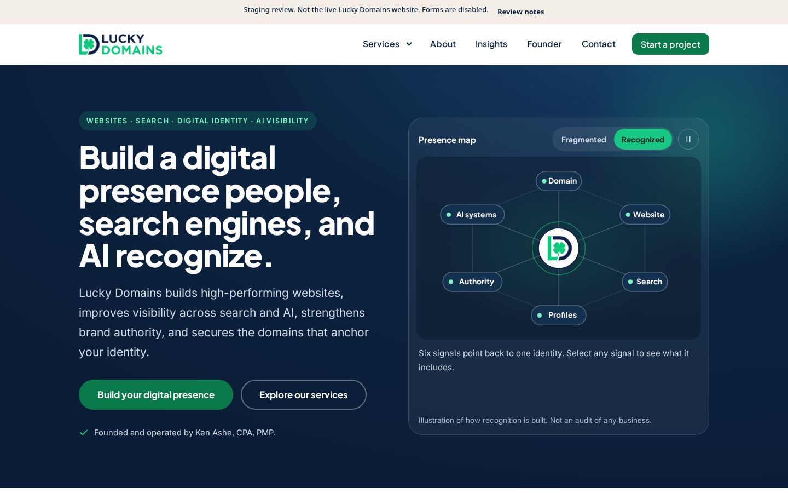

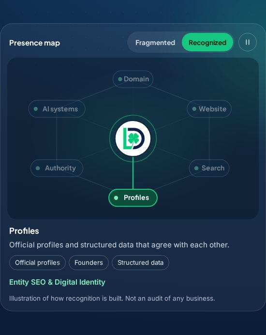


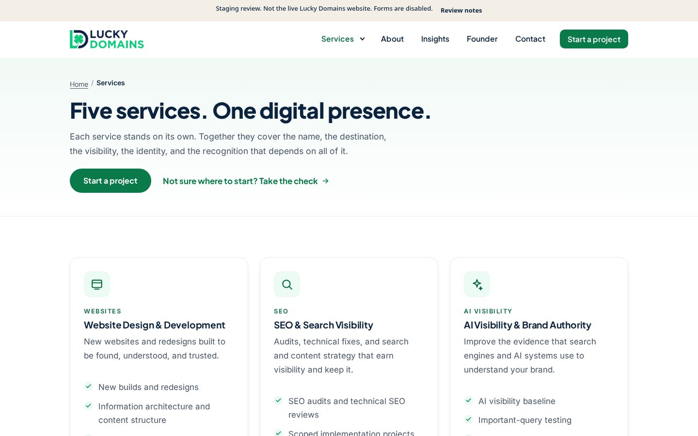

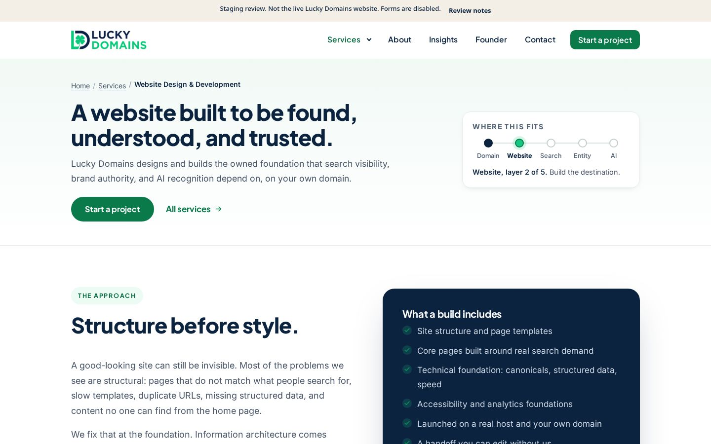


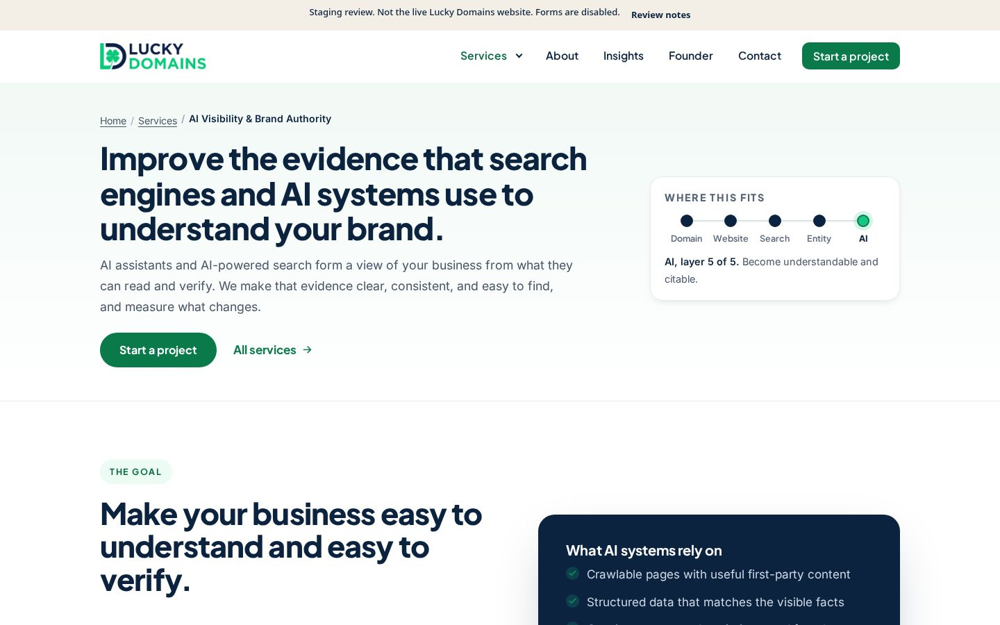


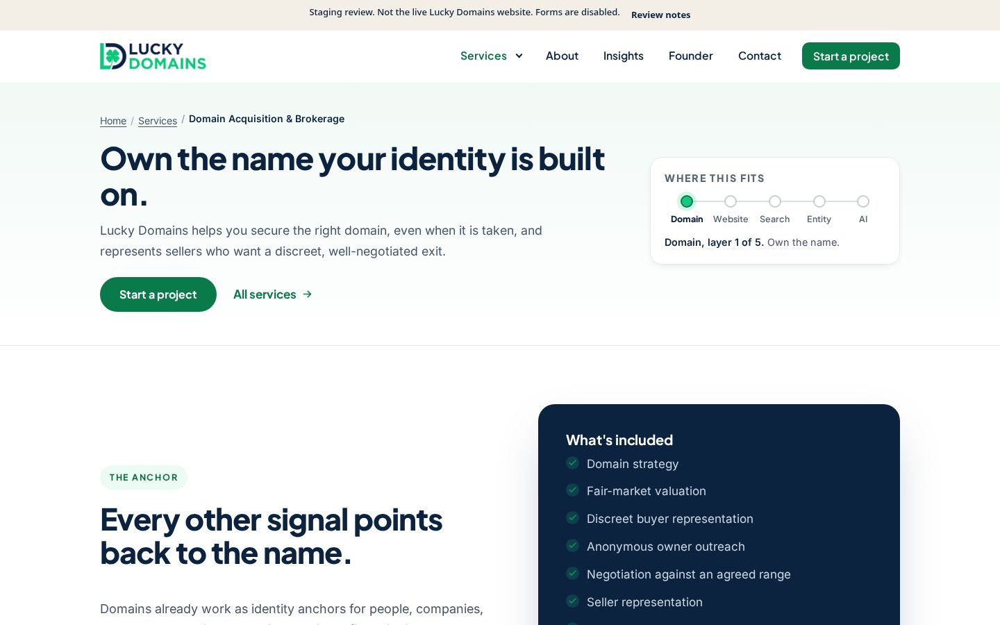

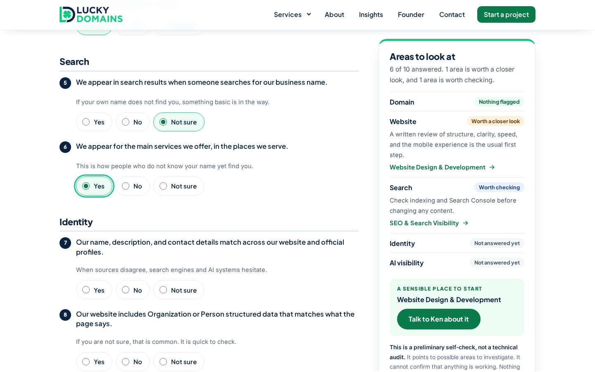

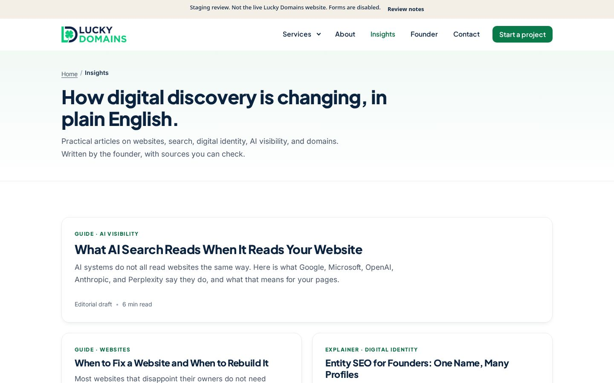


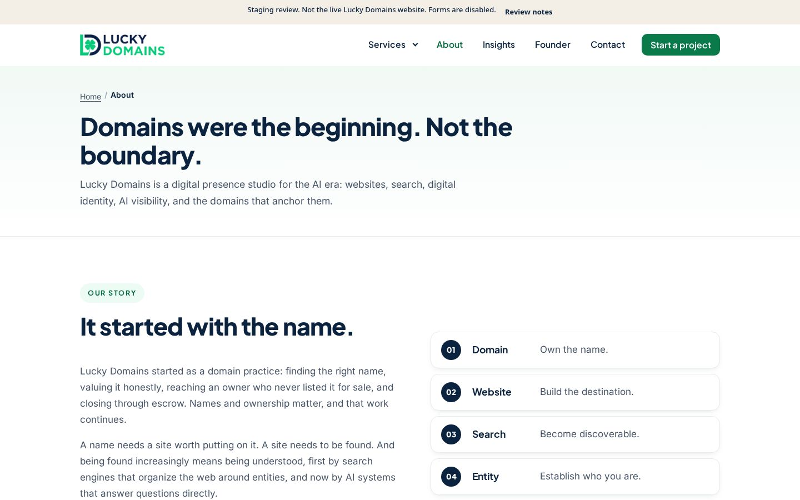


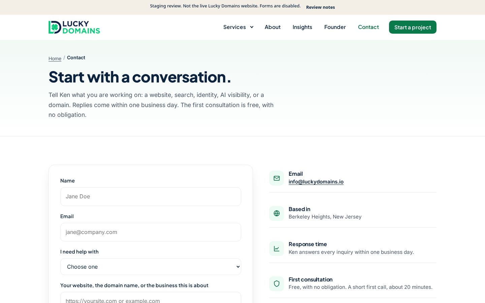

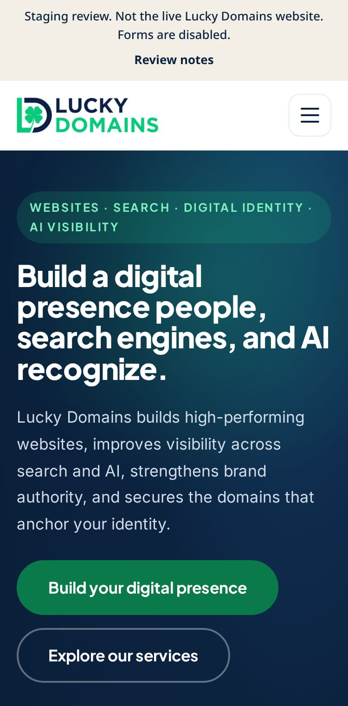


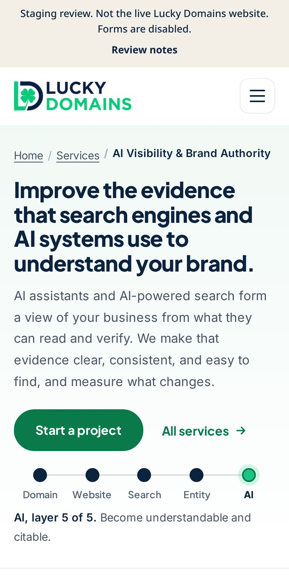

Full-length captures: home, desktop, home, mobile, article, desktop, article, mobile.